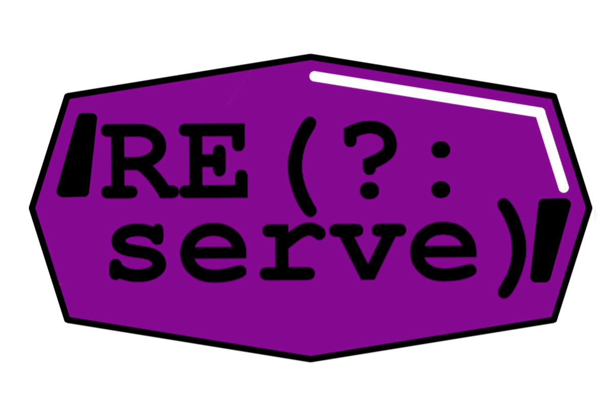

|
|
REserve 2️⃣

2️⃣
A lightweight and versatile web server
While you caffeinate serie
Offered by ☕ Arnaud Buchholz 


|
Why another HTTP framework ?
Which package do you use to serve static files,
experiment a website or build a minimalistic service ?
REserve has no dependencies,
is fast, versatile and customizable.
It also comes with testing helpers
and TypeScript definitions.
Basic usage
To start serving a static website :
> npm install -g reserve
> reserve
Server running at http://192.168.4.41:5000/
Configuration may be defined inside a file named reserve.json.
Programmatic usage
import { serve } from 'reserve';
serve({ /* configuration */ })
.on('ready', ({ url }) => {
console.log(`Server running at ${url}`);
})
.on('error', ({ reason }) => {
console.error(reason);
});Request handling is configured with mappings associating matching criteria with handlers.
{
"port": 8080,
"mappings": [{
"match": "^/private/",
"status": 403
}, {
"match": "^/(.*)",
"file": "./$1"
}, {
"status": 404
}]
}private folder are served.
Handlers are inbuilt for the most common tasks :